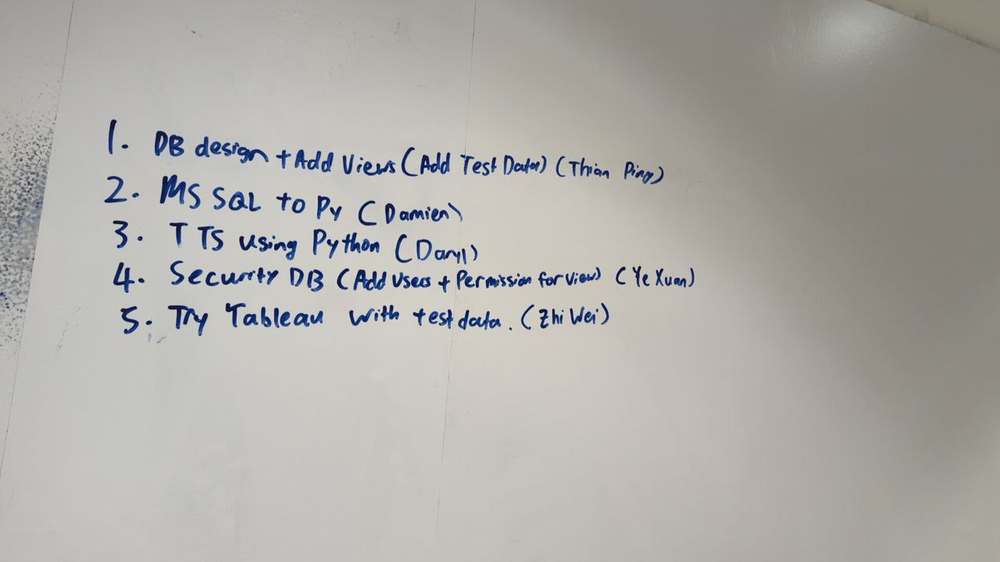
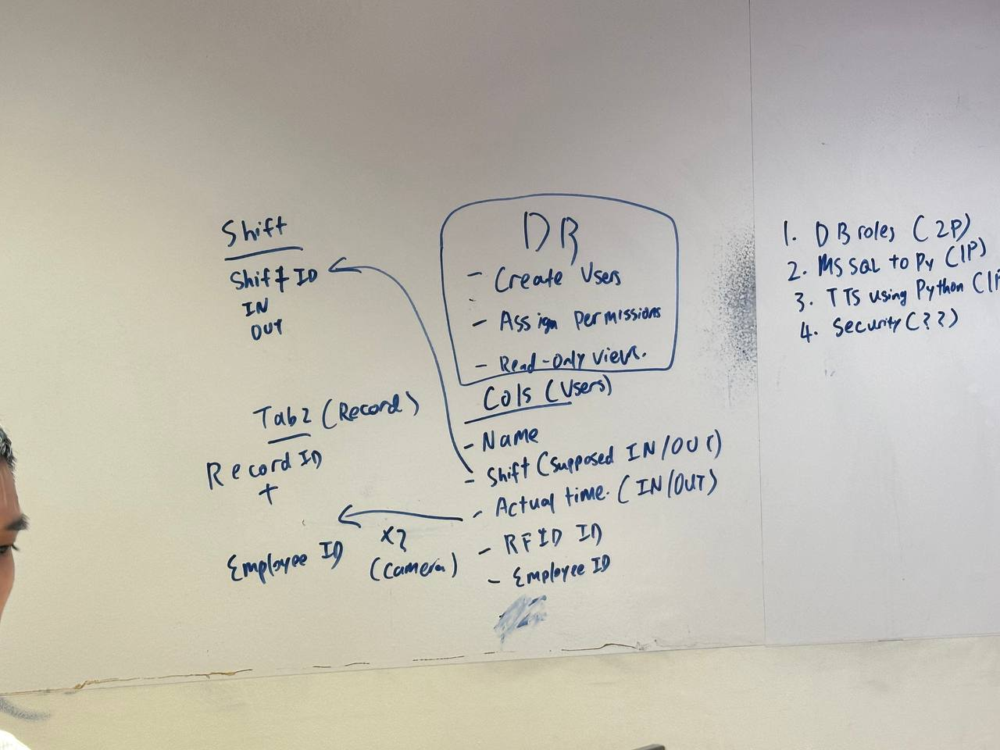

It is Week 3 of the assignment, so far things are looking good!
For this week, we have finished our inception deck and also allocated roles.
We discussed the timeline for the project and delegated the work accordingly.
Below is an image of the roles we each have in this project.
As seen above, I am in charge of handling the insertion of data from Python to Microsoft SQL Server.
This is an important task as the data of the employees such as their check in and check out time will be recorded and inserted into the database.
This step is crucial when we link the RFID Reader to the Raspberry Pi, and the Raspberry pi to the computer.
When the RFID Reader detects an employee walking past it, it records important data that can be used for business purposes.
In the picture below, the tables and data for our database is shown.
My groupmate Thian Ping is responsible for handling the creation of the database and tables,
while I am in charge of handling the insertion of data into the database.
I volunteered to work on the insertion of data into MSSQL through Python as I have not used python in a while and want to refresh my knowledge.
More importantly, Python is one of the most used languages for data analytics, so handling this task will allow me to learn and gain more experience.
One problem we faced was deciding what data was necessary and what wasn't. Thankfully, we got it all sorted out before the end of class.
This week, I've learnt how to use Python together with MSSQL, and I've also learnt to brainstorm effectively.